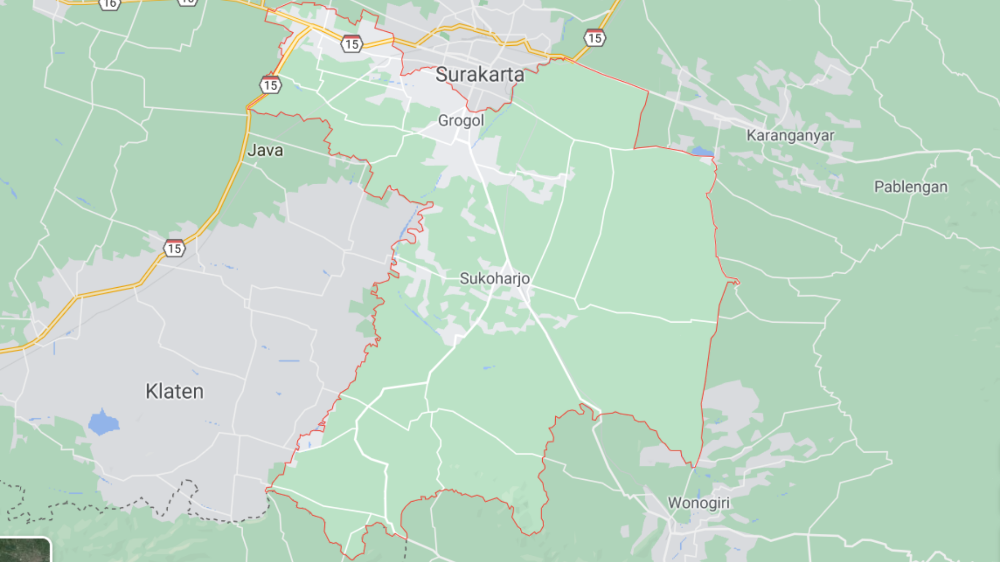

Sukoharjo Regency
Sukoharjo Regency is a regency in the Central Java province in Indonesia.
Its capital is Sukoharjo, about 10 km south from Surakarta.
The regency is part of metropolitan zone of Surakarta, which is known as Subosukawonosraten.
Where is Sukoharjo?

This is the location of Sukoharjo regency.
This regency is bordered by Surakarta in the north, Karanganyar Regency in the east,
Wonogiri Regency and Yogyakarta in the south as well as Klaten Regency in the west.